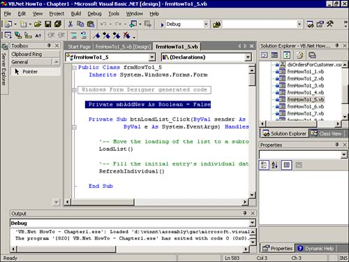

Add a new command button under btnEdit, and then set the Name property to btnNew and the Caption property to &Save.
Add a new module-level variable called mbAddNew, which is a Boolean variable to keep track of whether you are adding a new record. This variable will be placed outside of your routines, just under the forms code. You can see this in Figure 1.9.
Figure 1.9. By placing this variable just underneath Windows Form Designer Generated Code and declaring it Private, routines inside the Class can see it, but those outside cannot.

Tip

You can collapse and expand routines that you are working on within modules. This makes it handy when you are working on new routines (which can be expanded) and don't want to mess with old routines (which can be collapsed).
Add the following code to the Click event of the new command button btnNew. This code first sets the Boolean variable called mbAddNew to True. It then uses the AddNew method of the form's BindingContext object to add a new record to the dsCustomerIndividual dataset. Finally, the code calls the ActiveEditing routine to enable the text boxes.
Listing 1.11 frmHowTo1_5.vb: Adding a New Record to the dsCustomerIndividual Dataset and Toggling Text Boxes
Private Sub btnNew_Click(ByVal sender As System.Object, _ ByVal e As System.EventArgs) Handles btnNew.Click mbAddNew = True '- Using the BindingContext class add a new record Me.BindingContext(Me.dsCustomerIndividual, "Customers").AddNew() ActivateEditing(True) End SubModify the Click event of the btnSave to test whether the mbAddNew flag has been set to True, meaning that a new record is being added. If True, then after saving the record by calling the SaveRecord and ActivateEditing routines, the LoadList and RefreshIndividual are called to load the new record's data. Note that the SaveRecord, ActiveEditing, and RefreshIndividual routines have not changed from How-To 1.4. The mbAddNew variable is then set to False.
Listing 1.12 frmHowTo1_5.vb: Saving the Changed Data, Toggling Text Boxes, and Reloading the List Box and First Record in the List
Private Sub btnSave_Click(ByVal sender As System.Object, ByVal e As System.EventArgs) Handles btnSave.Click '- Save the information SaveRecord() '- Disable the text boxes ActivateEditing(False) If mbAddNew Then LoadList() RefreshIndividual() mbAddNew = False End If End SubModify the Click event for the btnCancel button to reset the mbAddNew variable to False, as seen in Listing 1.13.
Listing 1.13 frmHowTo1_5.vb: Canceling the Edit and Resetting the mbAddNew Variable
Private Sub btnCancel_Click(ByVal sender As System.Object, _ ByVal e As System.EventArgs) Handles btnCancel.Click '- Use the BindingContext class to cancel the current editing. Me.BindingContext(Me.dsCustomerIndividual, "Customers").CancelCurrentEdit() ActivateEditing(False) mbAddNew = False End SubNow it is time to add the delete functionality. To do this, add the following code to the Click event of the new button called btnDelete. The first line of the code you added begins by introducing a new method called RemoveAt and a new property called Position, both used with the BindingContext object. You will work from the inside out. The Position property tracks the current position in the dataset, in this case dsCustomerIndividual. The RemoveAt method marks the record that is at the position passed to it for deletion.
Next, the Update method of the odaCustomerIndividual adapter is used to call the DELETE SQL statement command against the dataset, deleting the actual rows in the data set. The AcceptChanges method is called to send the changes to the dataset, a delete in this case, back to the server. Finally, the LoadList, RefreshIndividual, and ActivateEditing subroutines are called to refresh the list, refresh the first record in the list for the text boxes, and toggle the text boxes so that the user knows he can't edit them.
Listing 1.14 frmHowTo1_5.vb: Deleting the Selected Record and Reloading the List Box
Private Sub btnDelete_Click(ByVal sender As System.Object, _ ByVal e As System.EventArgs) Handles btnDelete.Click '- Mark the row for deletion using the RemoveAt method of the BindingContext Me.BindingContext(Me.dsCustomerIndividual, _ "Customers").RemoveAt(Me.BindingContext(Me.dsCustomerIndividual, "Customers").Position) '- Perform the requested task at the dataset ' level using the data adapter odaCustomerIndividual.Update(dsCustomerIndividual, "Customers") '- By accepting the changes, the data gets sent back to the server dsCustomerIndividual.AcceptChanges() '- Reload the list LoadList() '- Display the first record RefreshIndividual() '- Disable the text boxes ActivateEditing(False) End Sub